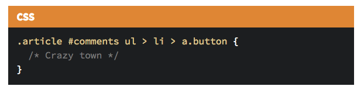
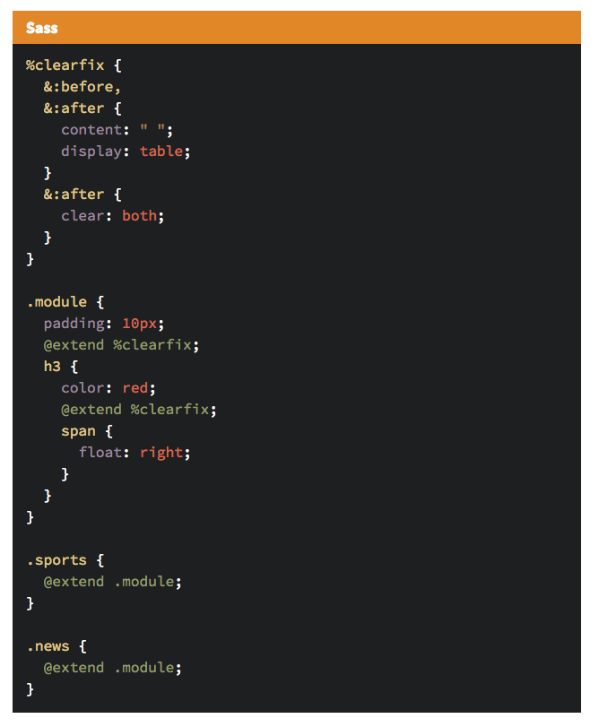
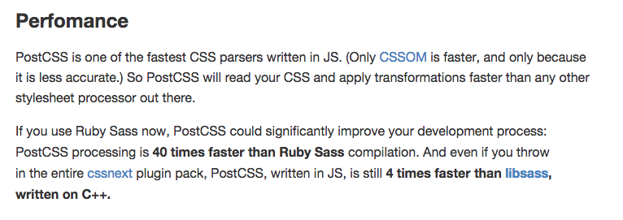
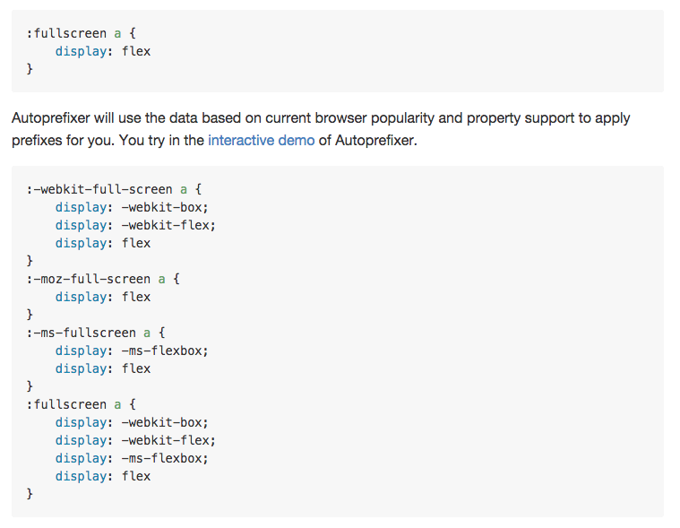
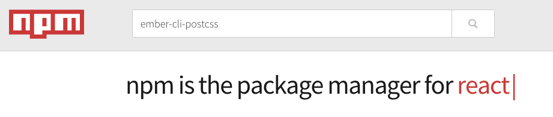
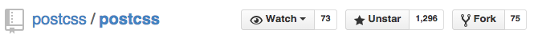
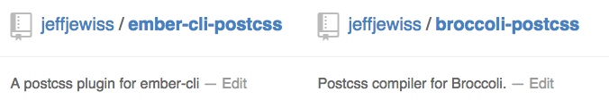
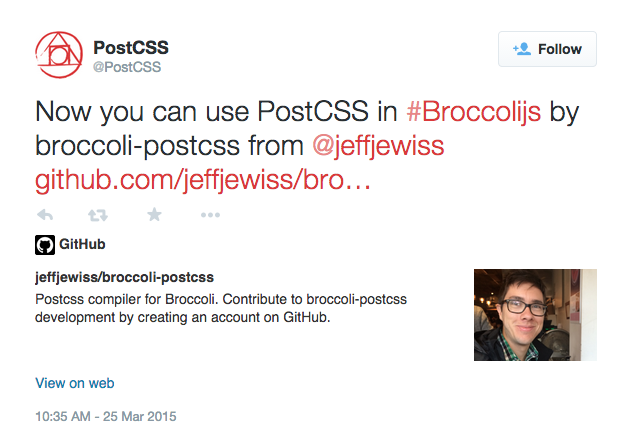

class: center, middle # Postcss with Ember ## Use CSS4 today with the power of JS modules --- class: center, middle ## @jeffjewiss ## http://jeffjewiss.com --- class: center, middle, inverse ## Writing CSS with a team size > 1 sucks ## Preprocessors ~~to the rescue~~ hide the problem ## Besties: Components & BEM ## Not another processor…why is this different? ## Okay I'm convinced, how do I use it? ??? Quickly, here's what I'd like to cover tonight. I'm going to break the rules and read this slide... --- class: center, middle ## Writing CSS with a team size greater than 1 sucks ### everything is global ### naming things is really hard ### it gets worse over time ??? Naming collisions are common. How do you include plugins or third party CSS and avoid colliding with your styles? --- class: center, middle  ??? No ones fault, but CSS is hard We can have the best intentions, but everyone writes CSS differently. With everything being ina global namespace, this creates a mess. We're likely always battling against specificity. 1000 for style attributes 100 for each ID 10 for each attribute, class or pseudo-class 1 for each element name or pseudo-element --- class: center, middle ## Preprocessors ~~to the rescue~~ hide the problem ### give us lots of powerful tools ### but it's learning another DSL ### you need coworker buy-in ### might add new language dependencies ??? Tries to fix the pain points of authoring CSS. Powerful tools: mixins, variables, extend, nesting, etc. DSL: another language to learn You have to convince your coworkers to use the same tools. It likely disrupts their workflow, especially if they're stubborn or like to wait before trying new tools. On one team I was on it took what felt like 6 months to try the switch from LESS to Sass. Ruby in Sass, Libsass in C++ --- class: center, middle  ??? We have to be careful with these tools. You might think you're being clever... --- class: center, middle  ??? And then it backfires on you. Selector soup! I know, it's a contrived example. --- class: center, middle ## Besties: Components & BEM ### components provide powerful custom behavior ### Ember embraces HTML and the spec ### BEM modules embrace CSS ### CSS isn't going anywhere ??? Views are going away and components are shareable from app to app. Aligning Ember components with the spec means learnign them is a transferrable skill to other frames and it will have first class support. Strict naming conventions and linting goes a long way. Don't expect CSS to disappear. Any attempts to replace HTML or CSS haven't been very successful and I'd be shocked if that changed. --- class: center, middle ## Not another processor…why is this different? ### Essentially just a parser/tokenizer ### Everything is a plugin ### Embraces the Node + NPM workflow ### The CSS4 spec is a big priority ??? The main feature is to take a string of CSS for parsing. It includes only a CSS parser, a CSS node tree API, a source map generator, and a node tree stringifier. All of the actual transformations are plugins, it's kind of like a build your own processor. There are no other language dependencies and plugins are easy to find and configure node modules. The majority of plugins are to transpile future CSS syntax. --- class: center, middle  ??? --- class: center, middle <img src="assets/benchmark.png" width=700> ??? --- class: center, middle <img src="assets/postcss-plugins.png" width=300> ??? --- class: center, middle  ??? The most popular plugin. Makes using vendor prefixed features a breeze. One less thing to think about and keep track of. --- class: center, middle ??? I've been enjoying writing ES6 in the Six...so I'll show you how you can write CSS4 now too. --- class: center, middle ## Okay I'm convinced, how do I use it? ### An Ember CLI plugin, right? ??? So where's the Ember CLI plugin? Well, I'd like to tell you a bit of a story first. --- class: center, middle  ??? So I went searching for the CLI plugin I expected to find. And I didn't find one. And I mean, it's not an Ember talk without a React reference, right!? --- class: center, middle  ??? So Postcss isn't that popular, I'm not totally surprised Ember authors aren't using it. --- class: center, middle  ??? So I'm happy to share with you guys that I've published the first version of the 2 plugins needed to use Postcss with an Ember CLI app. And if I've truly convinced you to give Postcss a try it would be amazing if you could submit bugs as I work on adding support for source maps and write tests. --- class: center, middle  ??? I don't know what sort of Google Alerts setup the author of Postcss has, but I was greeted with this within an hour of publishing "broccoli-postcss". So it's been a fun time working with it so far... --- class: center, middle, inverse # DEMO TIME